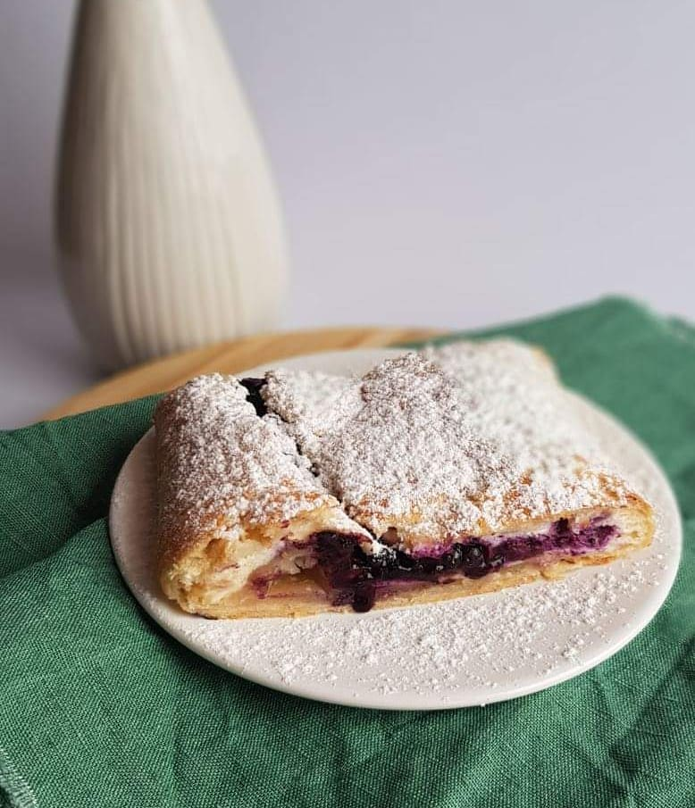

Tvarohový závin podľa @beet_n_roll — Normy Jedál
TVAROHOVÝ ZÁVIN S BORŮVKAMI
1 rozválené listové těsto
250 g tučného tvarohu z alobalu
1 celé rozmíchané vajíčko
1 vrchovatá lžička kukuřičného škrobu (nebo vanilkového pudinku)
60 g moučkového cukru
lesní borůvky 🌱
1 lžička kukuřičného škrobu
40 g dětských piškotů
1) Rozpálíme troubu na 200°C.
2) Tvaroh si v rozmícháme se skoro celým rozmíchaným vajíčkem, škrobem a cukrem. Zbytek vajíčka si odložíme na potření.
3) Piškoty si nadrtíme válečkem (nebo nahrubo nasekáme v robotu). Borůvky smícháme se škrobem.
4) Rozválené těsto si posypeme rovnoměrně piškotama, na ně navrstvíme tvarohovou náplň, a na tvaroh navrstvíme borůvky.
5) Potřeme zbytkem vajíčka a pečeme asi 25 - 30 minut dozlatova. 😉
#recepty #food #jidlo #baking #vareni #foodie #yummy #homemade #foodlover #inspirace #pecemedoma #boruvky #zavin #tvarohovyzavin #zavin #domaci #listovetesto